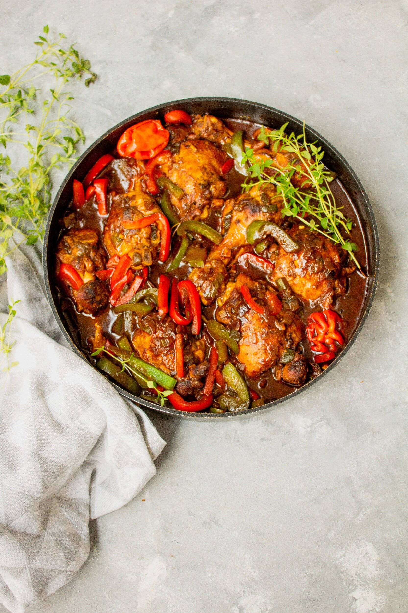

Jamaican Brown Stew Chicken Recipe

Description
Brown Stew Chicken is a staple in Jamaican Cuisine. It's pretty easy to
make and is guaranteed to be tasty and full of flavor! The dish is best
served with Jamaican-style Rice & Peas. I hope you try it out!
Ingredients
For Marinade:
- 4 cloves garlic, minced
- 1/2 cup sliced green onions
- 2 tbsp dark brown sugar
- 2 tbsp minces scotch bonnet pepper
- 1 tbsp cider vinegar
- 2 tsp fresh giner, minced
- 2 tsp salt
- 1 tsp black pepper
- 1 tsp smoked paprika
- 1/2 tsp ground pimento (allspice)
- 8 bone-in, skin-on chicken thighs
For the Rest
- 3 tbsp olive oil
- 1 large yellow onion
- 1 pinch salt
- 1 tbsp brown sugar
- 4 cups chicken broth
- 1/3 cup ketchup
- 2 bay leaves
- 1 cup sliced carrot
- 1 cup quartered bell peppers
Steps
- Mix garlic white parts of green onions, brown sugar, thyme, habanero,
vinegar, ginger, salt, pepper, paprika, and allspice in a large mixing bowl.
- Make 2 cuts, about 1-inch apart, into the skin side of each thigh, perpendicular
to the bone, cutting all the way down to the bone. Add chicken thighs to marinade;
mix until evenly coated. Cover and place in the refrigerator to marinate, at least
4 hours or up to 12 hours. If possible, flip thighs several times while marinating.
- Remove chicken from marinade. Scrape off any chunks of marinade from chicken into
the bowl and reserve for later.
- Heat 2 tablespoons oil in a large, deep, heavy-bottomed skillet or Dutch oven over
medium-high heat until almost smoking. Working in batches, brown the chicken all
over, about 5 minutes per side. Transfer chicken to the marinade bowl; set aside.
- Heat 1 tablespoon oil in the same pan over medium-high heat. Add onion and a
pinch of salt; cook until golden brown, 3 to 5 minutes. Stir in 1 tablespoon brown
sugar and cook until onions are dark brown and caramelized, 3 to 5 minutes more.
- Add chicken broth, ketchup, and bay leaves to the pan; bring to a boil. Add carrots,
bell peppers, browned chicken thighs, and reserved marinade.
- Reduce heat to medium-low. Simmer, stirring occasionally, until chicken is tender
and no longer pink in the center and sauce has reduced and thickened, 1 to 1 1/2
hours. Skim excess fat that floats to the top; baste chicken occasionally with sauce.
- Taste and adjust seasoning. Stir in green parts of green onions.